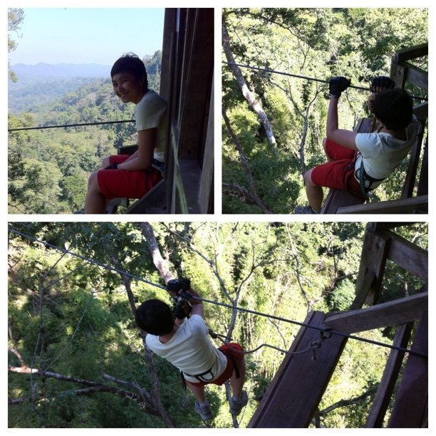

Tue, 08 Feb 2011 17:32:00 · laos · vnsavitri · travel · jungle
zip lining across the jungle up high in the

Zip-lining across the jungle up high in the mountain in Northern Laos. Only suitable for adrenaline junkie and definitely ain’t for the faint of heart!